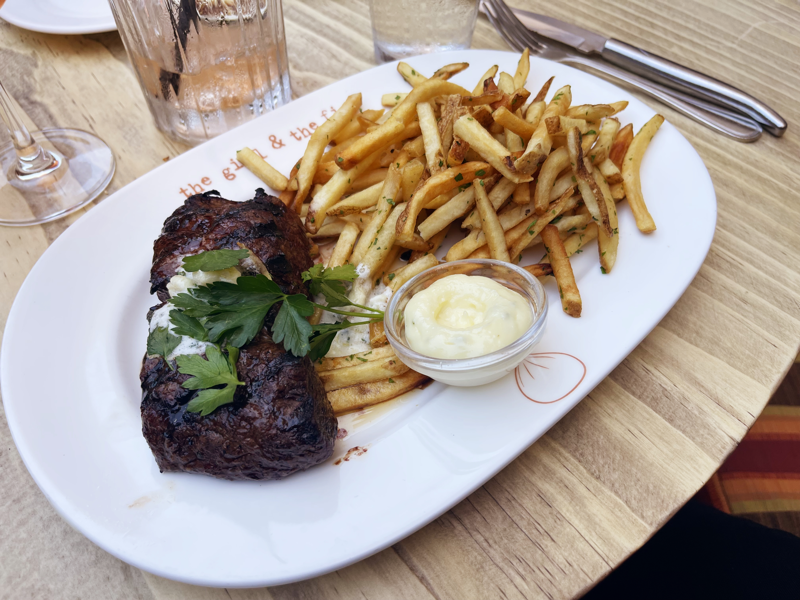

Ingredients:
- Steak – NY Skirt Steak or Ribeye are my favorites
- Butter
- Rosemary
- Garlic Clove
- Russet Potatoes
- Avocado Oil
- Salt & Pepper
Prep time: 20 mins | Cook time: 40 mins
Steak frites has been a longtime favorite of mine – and with a few couple adjustments this meal can be as unique and flavorful as you want it to be!

Let your steak come to room temperature and pat dry. Season both sides generously with salt and pepper – I love Maldon’s flaky sea salt, but anything will do! Heat your pan until water danced when splashed. Add a neutral oil like avocado oil. Sear the fat caps until some of the fat renders and you get great crust.
Place your steak down and press using your hands or with a steak weight. Let them sear for 2 minutes then flip. After 1 minute on the second side, add a tablespoon of butter followed by one clove of peeled garlic and a sprig of rosemary.
Baste the steaks with the butter for an additional minute. For a medium rare cook, remove from the pan when the steak reaches an internal temperature of 130 degrees F. Let rest for 7 – 10 minutes before slicing against the grain and finishing with more flaky sea salt.
To start, preheat the oven to 425 degrees. While the steaks are coming to room temperature, slice your potatoes. Add them to a bowl of cold water (with ice cubes!) for 5-7 minutes.
After they’ve chilled, pat dry and add to a baking sheet covered in parchment paper. Add salt, pepper, and avocado oil. Let bake for 15 minutes on 425 degrees F or until fork tender. Shake the pan then broil in the oven until crispy.
Add your steak to a plate with a generous helping of fries!
Now steak frites are a classic on their own but there are a few amazing sauce options that can completely elevate your dish.
After removing the steak, add diced garlic along with thinly diced shallots and mushroom to the pan. Sauté until they release some of their liquid – scraping at the fond left behind from the steak. Add salt and about a half cup of red wine and let it reduce. Once the sauce has thickened, add some beef broth, and continue to reduce. Add your butter but quick – be careful to not let your sauce break!
Add a generous helping to the top of your sliced steak and garnish with parsley! Serve alongside the red wine for a classic pairing.
This sauce is best after it had some time to marinate so, prior to cooking the steak, finely chip parsley and cilantro – yielding 1 cup all together. Add oil and a mix of red wine and white wine vinegar until the herbs are saturated and some oil collects in the dish. Add a small amount of lemon zest and one small, grated garlic clove along with a teaspoon of red pepper flakes. Finish with salt & pepper to taste.
TIP: Notice the lack of measurements; I have complete confidence in your abilities!